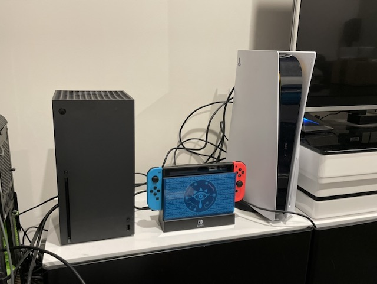
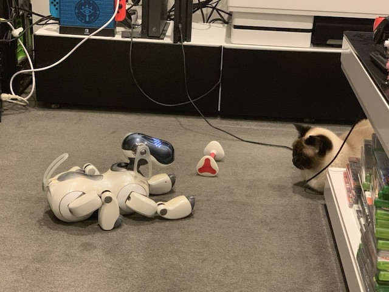

Computers have been a part of my life since I was around 10 years of age. I used to go to my father’s office and use the PC after the staff went home. Mainly gaming but also discovering the World Wide Web. During high school I found some friends who also enjoyed PC gaming and had a few overnight LAN parties, carrying the beast of a computer and CRT monitor around. After high school I started University and bought a dial-up modem and used to connect to the internet when Dad wasn’t home, as he had outlawed the internet being used at home. I found communities online which really helped me learn about myself and the world.
I’ve always been the go-to guy for tech issues for family, friends and colleagues. I’ve built PCs, trained staff (and customers) in systems, recovered lost data, and taught countless people how to use devices and programs/sites/apps.
A colleague of mine at Telstra is in their third year of studying their Bachelor of Information Technology with RMIT via Open Universities Australia and recommended it to me. I enrolled that evening - I’m thirsty to learn how to apply my skills in this area. I’d like to learn how to create great websites, iOS apps, programming and database management. I am hopeful that this will lead me to a job that’s more challenging, interesting, and rewarding.